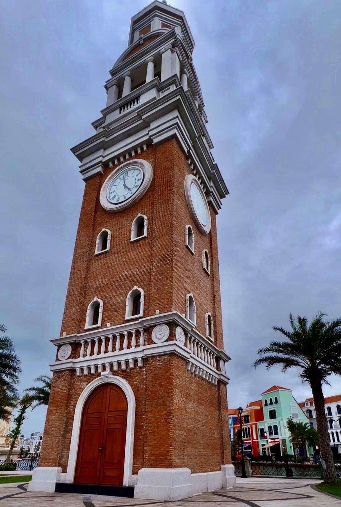
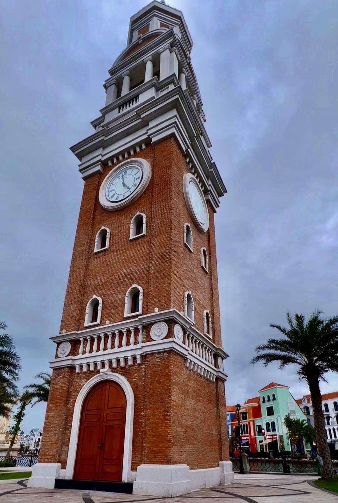

Đảo Phú Quốc
- Trang web của Trương Minh Tâm -Nằm trong vịnh Thái Lan, thuộc huyện Phú Quốc, tỉnh Kiên Giang, Phú Quốc là hòn đảo du lịch lớn nhất Việt Nam. Nơi đây được mệnh danh là đảo ngọc trên vùng biển phía Tây Nam của Tổ quốc, thu hút rất nhiều du khách cũng như các nhà đầu tư quốc tế. Với nguồn tài nguyên đa dạng và độc đáo, cộng thêm chính sách đầu tư, phát triển đúng hướng, chỉ trong vòng vài năm qua, Phú Quốc đã trỗi dậy mạnh mẽ để trở thành điểm sáng về du lịch trong nước và khu vực.
 

Nổi tiếng là hòn đảo du lịch biển lớn nhất ở Việt Nam. Phú Quốc hấp dẫn du khách bởi vẻ đẹp hoang sơ
của những bãi biển đẹp, cát trắng, và nắng vàng, ngoài ra thiên nhiên ưu đãi cho phú quốc nguồn hải sản rồi
dào phong phú giúp cho hòn đảo là điểm đến hấp dẫn với du khách trong nước và quốc tế.